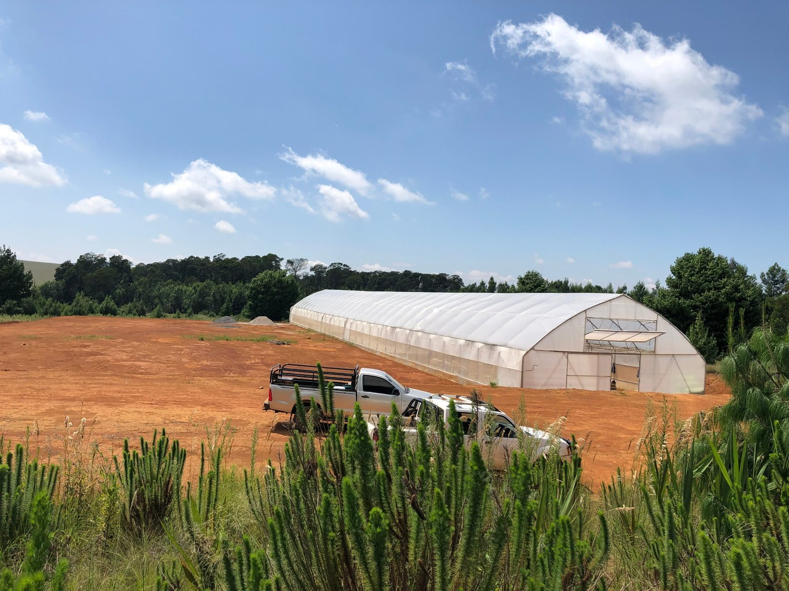
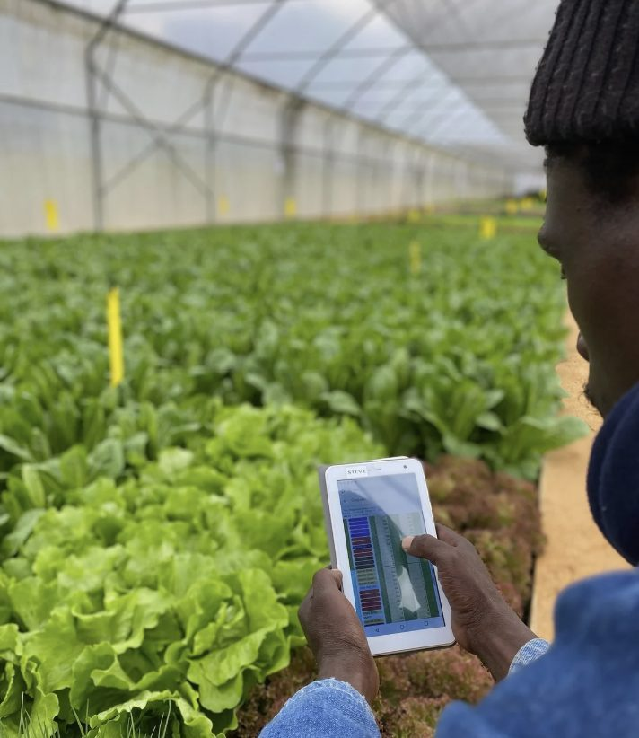

 IMPACT VENTURE PARTNERS
IMPACT VENTURE PARTNERS
Portfolio venture · raise now open
Ezulwini
13 November 2026
Commercial farms with local ownership. An operating system that makes a first-generation farmer's farm stable, and investable, from day one.
Raising, in three closes
R8.75m → R14m → R20m
To refit Hekpoort, the farm Ezulwini already owns, finish its operating system and clear its bank debt. Hekpoort then carries head office and anchors a network of co-owned farms.
Why Ezulwini exists
Commercial farming in South Africa is still owned by very few. Black farmers hold an estimated 5 to 10% of commercial production, and new entrants fail on four things at once: capital, buyers, systems and seasonal income.
Lliam Roach built Ezulwini to solve all four together. The first farm, in Dullstroom, has traded for four years and made R337k farm-level profit in FY26, run by a local team trained on site.

The farm team in the grow tunnel, Dullstroom.
Why we backed it
Ezulwini is the kind of real-economy business N+1 exists to build with first-generation founders: a working farm, a team that grew from local hires into farm managers, and a system that can be repeated. Steven Phoku started as a day labourer on the first earthworks, now runs Dullstroom, and is next in line to become a shareholder and train the farmers who follow him.
N+1 is an early investor and has partnered with Ezulwini on commercial planning, the financial model and systems development.
What the raise builds
| Anchor | Hekpoort, a 50 ha farm in Gauteng, refitted and cash positive with head office from July 2027 |
| Unit | A four-tunnel network farm earns R2.46m EBITDA per annum and pays head office a R1.2m setup margin once and a 6.5% fee annually |
| Path | Group EBITDA grows from R4.4m in the year to February 2028 to R12.5m by February 2031 as the network builds |
| Structure | Blended debt and equity: a convertible note at 13% per annum, convertible up to half at a R50m post-money cap |
N+1's role from here
N+1 is a long-term partner. With this round N+1 takes a key role in providing and co-building Ezulwini's back office: accounts, people, growth and technology, delivered through the N+1 Venture Engine, alongside continued commercial and financial leadership.

Recording growth data in the farm app, Dullstroom.